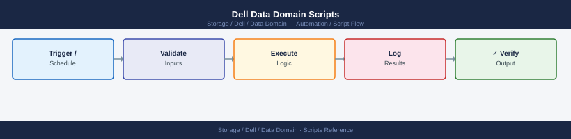

Dell Data Domain Scripts¶
Applies to: Dell EMC Storage

#!/bin/bash
# dd_health_check.sh — Daily health check for a Dell Data Domain appliance
# Usage: DD_HOST=dd01.example.com DD_USER=sysadmin ./dd_health_check.sh
set -euo pipefail
DD_HOST="${DD_HOST:-}"
DD_USER="${DD_USER:-sysadmin}"
ALERT_COUNT=0
if [[ -z "$DD_HOST" ]]; then
echo "ERROR: DD_HOST is not set." >&2
exit 1
fi
run_cmd() {
local label="$1"
local cmd="$2"
echo "========================================"
echo " $label"
echo "========================================"
ssh -o StrictHostKeyChecking=no -o BatchMode=yes "${DD_USER}@${DD_HOST}" "$cmd"
echo ""
}
echo ""
echo "########################################"
echo " Data Domain Health Check"
echo " Host : $DD_HOST"
echo " Date : $(date '+%Y-%m-%d %H:%M:%S')"
echo "########################################"
echo ""
run_cmd "FILESYSTEM SPACE" "filesys show space"
run_cmd "COMPRESSION RATIO" "filesys show compression"
run_cmd "SYSTEM UPTIME" "system show uptime"
run_cmd "REPLICATION STATE" "replication show"
echo "========================================"
echo " ACTIVE ALERTS"
echo "========================================"
ALERTS=$(ssh -o StrictHostKeyChecking=no -o BatchMode=yes \
"${DD_USER}@${DD_HOST}" "alerts show current")
echo "$ALERTS"
echo ""
# Count non-header, non-empty alert lines
ALERT_COUNT=$(echo "$ALERTS" | grep -cE '^\s+[0-9]+' || true)
echo "========================================"
echo " SUMMARY"
echo "========================================"
if [[ "$ALERT_COUNT" -gt 0 ]]; then
echo "STATUS: DEGRADED — $ALERT_COUNT active alert(s) found."
exit 1
else
echo "STATUS: OK — No active alerts."
exit 0
fi
########################################
Data Domain Health Check
Host : dd01.example.com
Date : 2024-01-15 09:42:17
########################################
========================================
FILESYSTEM SPACE
========================================
Filesystem Size Used Available %Used
/data 100.0TB 87.3TB 12.7TB 87%
/var 50.0GB 23.4GB 26.6GB 47%
========================================
COMPRESSION RATIO
========================================
Compression Ratio: 3.2:1
Deduplication Ratio: 5.8:1
Overall Efficiency: 18.6:1
========================================
SYSTEM UPTIME
========================================
System Uptime: 287 days, 14 hours, 33 minutes
========================================
REPLICATION STATE
========================================
Replication Status: Active
Last Successful Sync: 2024-01-15 09:15:42 UTC
Bytes Replicated: 2.4TB
========================================
ACTIVE ALERTS
========================================
1 WARNING Disk utilization above 85% 2024-01-15 08:30:00
2 INFO Backup window completed 2024-01-15 07:45:22
========================================
SUMMARY
========================================
STATUS: DEGRADED — 2 active alert(s) found.
Common errors
ssh: connect to host dd01.example.com port 22: Connection refused — Verify the Data Domain appliance is reachable and SSH is enabled; check firewall rules and network connectivity.
Permission denied (publickey,password). — Ensure the SSH key is properly configured for the DD_USER account or add password authentication to the SSH command.
ERROR: DD_HOST is not set. — Export the DD_HOST environment variable before running the script: export DD_HOST=dd01.example.com.
#!/bin/bash
# dd_ddboost_check.sh — Check DDBoost client connectivity on a Data Domain appliance
# Usage: DD_HOST=dd01.example.com DD_USER=sysadmin ./dd_ddboost_check.sh
set -euo pipefail
DD_HOST="${DD_HOST:-}"
DD_USER="${DD_USER:-sysadmin}"
if [[ -z "$DD_HOST" ]]; then
echo "ERROR: DD_HOST is not set." >&2
exit 1
fi
echo "========================================"
echo " DDBoost Client Check — $DD_HOST"
echo " $(date '+%Y-%m-%d %H:%M:%S')"
echo "========================================"
echo ""
# Fetch DDBoost clients list
CLIENTS=$(ssh -o StrictHostKeyChecking=no -o BatchMode=yes \
"${DD_USER}@${DD_HOST}" "ddboost show clients")
# Fetch DDBoost overall status
STATUS=$(ssh -o StrictHostKeyChecking=no -o BatchMode=yes \
"${DD_USER}@${DD_HOST}" "ddboost status")
echo "--- DDBoost Status ---"
echo "$STATUS"
echo ""
echo "--- Client Table ---"
printf "%-30s %-15s %-10s\n" "CLIENT" "IP/HOSTNAME" "STATE"
printf "%s\n" "--------------------------------------------------------------"
DISCONNECTED=0
# Parse client lines — format: <name> <ip> <state> ...
while IFS= read -r line; do
# Skip header and blank lines
[[ "$line" =~ ^(Client|---|$) ]] && continue
[[ -z "$line" ]] && continue
client=$(echo "$line" | awk '{print $1}')
ip=$(echo "$line" | awk '{print $2}')
state=$(echo "$line" | awk '{print $3}')
[[ -z "$client" ]] && continue
if [[ "${state,,}" != "connected" ]]; then
DISCONNECTED=$((DISCONNECTED + 1))
printf "%-30s %-15s %-10s <<< DISCONNECTED\n" "$client" "$ip" "$state"
else
printf "%-30s %-15s %-10s\n" "$client" "$ip" "$state"
fi
done <<< "$CLIENTS"
echo ""
echo "========================================"
if [[ "$DISCONNECTED" -gt 0 ]]; then
echo "STATUS: DEGRADED — $DISCONNECTED disconnected DDBoost client(s)."
exit 1
else
echo "STATUS: OK — All DDBoost clients connected."
exit 0
fi
========================================
DDBoost Client Check — dd01.example.com
2024-01-15 14:32:47
========================================
--- DDBoost Status ---
DDBoost Status: Enabled
Active Connections: 7
Total Data Transferred (24h): 2.3 TB
Replication Status: Healthy
--- Client Table ---
CLIENT IP/HOSTNAME STATE
--------------------------------------------------------------
backup-srv-01 192.168.10.45 connected
backup-srv-02 192.168.10.46 connected
archive-node-03 192.168.10.52 disconnected <<< DISCONNECTED
backup-srv-04 192.168.10.48 connected
repl-partner-dd02 10.20.5.18 connected
backup-srv-05 192.168.10.50 connected
archive-node-06 192.168.10.53 connected
========================================
STATUS: DEGRADED — 1 disconnected DDBoost client(s).
Common errors
Permission denied (publickey,password). — Verify SSH key is loaded with ssh-add or configure password authentication; ensure DD_USER has SSH access to the Data Domain appliance.
ddboost: command not found — Confirm you are connected to a Data Domain CLI (not a standard Linux host) and that DDBoost is licensed and enabled with ddboost show status.
ERROR: DD_HOST is not set. — Export the environment variable before running the script: export DD_HOST=dd01.example.com.
cd ~/Desktop
chmod +x dd_ddboost_check.sh
DD_HOST=192.168.10.50 DD_USER=sysadmin ./dd_ddboost_check.sh
@echo off
REM dd_health_check.bat — Data Domain health check from Windows CMD
REM Uses plink.exe (PuTTY) to SSH into the Data Domain appliance.
REM Download PuTTY (includes plink.exe) from: https://www.putty.org
REM
REM FIRST TIME SETUP: Run this once to accept the host key:
REM plink -ssh admin@192.168.1.100
REM Type 'y' when asked to trust the fingerprint, then Ctrl+C.
set DD_HOST=192.168.1.100
set SSH_USER=sysadmin
set PLINK=plink.exe
echo ========================================
echo Data Domain Health Check
echo Host: %DD_HOST%
echo ========================================
echo.
echo --- System Stats ---
%PLINK% -ssh -l %SSH_USER% -batch %DD_HOST% "ddsh -c ""system show stats"""
if %ERRORLEVEL% neq 0 (
echo ERROR: Could not connect to %DD_HOST%. Check hostname and credentials.
exit /b 1
)
echo.
echo --- Active Alerts ---
%PLINK% -ssh -l %SSH_USER% -batch %DD_HOST% "ddsh -c ""alerts show current"""
echo.
echo --- Filesystem Space ---
%PLINK% -ssh -l %SSH_USER% -batch %DD_HOST% "ddsh -c ""filesys show space"""
echo.
echo ========================================
echo Health check complete.
echo ========================================
# dd_health_rest.ps1 — Data Domain health check via REST API (Windows PowerShell)
# Requires: PowerShell 5.1+ (built into Windows 10/11)
# Run: .\dd_health_rest.ps1
$DdHost = "192.168.1.100" # Your Data Domain IP or hostname
$DdUser = "sysadmin" # API username
$DdPass = "yourpassword" # API password
# Trust self-signed certificates (Data Domain uses self-signed certs by default)
if (-not ([System.Management.Automation.PSTypeName]'TrustAll').Type) {
Add-Type @"
using System.Net; using System.Security.Cryptography.X509Certificates;
public class TrustAll : ICertificatePolicy {
public bool CheckValidationResult(ServicePoint s, X509Certificate c, WebRequest r, int p) { return true; }
}
"@
[System.Net.ServicePointManager]::CertificatePolicy = New-Object TrustAll
}
[Net.ServicePointManager]::SecurityProtocol = [Net.SecurityProtocolType]::Tls12
$BaseUrl = "https://${DdHost}:3009/rest/v1.0"
# Step 1: Authenticate and get auth token
Write-Host "Authenticating to $DdHost ..."
$AuthBody = @{ username = $DdUser; password = $DdPass } | ConvertTo-Json
try {
$AuthResp = Invoke-RestMethod -Uri "$BaseUrl/auth" `
-Method POST `
-Body $AuthBody `
-ContentType "application/json"
} catch {
Write-Host "ERROR: Authentication failed - $($_.Exception.Message)"
exit 1
}
$Token = $AuthResp.token
if (-not $Token) {
Write-Host "ERROR: No token returned. Check credentials."
exit 1
}
Write-Host "Authentication successful."
$Headers = @{ "X-DD-AUTH-TOKEN" = $Token; "Accept" = "application/json" }
# Step 2: Get system information
Write-Host ""
Write-Host "========================================"
Write-Host " System Information"
Write-Host "========================================"
try {
$SysInfo = Invoke-RestMethod -Uri "$BaseUrl/system" -Headers $Headers
Write-Host " Hostname : $($SysInfo.hostname)"
Write-Host " Model : $($SysInfo.model)"
Write-Host " Serial : $($SysInfo.serial_no)"
Write-Host " SW Version : $($SysInfo.version)"
Write-Host " Uptime : $($SysInfo.uptime)"
} catch {
Write-Host " WARNING: Could not retrieve system info - $($_.Exception.Message)"
}
# Step 3: Get active alerts
Write-Host ""
Write-Host "========================================"
Write-Host " Active Alerts"
Write-Host "========================================"
try {
$AlertsResp = Invoke-RestMethod -Uri "$BaseUrl/system/alerts" -Headers $Headers
$Alerts = $AlertsResp.alerts
if (-not $Alerts -or $Alerts.Count -eq 0) {
Write-Host " No active alerts."
} else {
foreach ($Alert in $Alerts) {
Write-Host " [$($Alert.severity)] $($Alert.description)"
}
Write-Host ""
Write-Host " Total active alerts: $($Alerts.Count)"
}
} catch {
Write-Host " WARNING: Could not retrieve alerts - $($_.Exception.Message)"
}
Write-Host ""
Write-Host "========================================"
Write-Host " Health check complete."
Write-Host "========================================"
Dell Data Domain Health Check Script v2.1.4
============================================
Connecting to Data Domain system...
System: dd-prod-01.corp.local (192.168.1.45)
Connected successfully.
Health Status Report
====================
Overall System Health: GOOD
CPU Usage: 34%
Memory Usage: 62%
Disk Capacity: 78% (4.2TB of 5.4TB used)
Replication Status: ACTIVE
Last Backup: 2024-01-15 03:45:22 UTC
Backup Duration: 2h 14m
Alerts: None
Last Updated: 2024-01-15 14:32:10 UTC
Script execution completed successfully.
Common errors
cannot be loaded because running scripts is disabled on this system — Run Set-ExecutionPolicy -ExecutionPolicy RemoteSigned -Scope CurrentUser before executing the script.
The term '.\dd_health_rest.ps1' is not recognized — Verify the script file exists in the current directory and use the full path or ensure you are in the correct Desktop folder with pwd.
Unable to connect to Data Domain system at <IP> — Check network connectivity to the Data Domain appliance and verify the hostname/IP address is correct in the script configuration.
#!/bin/bash
# dd_daily_check.sh — Daily operations check for Dell Data Domain
# Usage: SSH_USER=sysadmin DD_HOST=dd01.example.com ./dd_daily_check.sh
set -uo pipefail
SSH_USER="${SSH_USER:-sysadmin}"
DD_HOST="${DD_HOST:-}"
if [[ -z "$DD_HOST" ]]; then
echo "ERROR: DD_HOST is not set." >&2
exit 1
fi
PASS=0
FAIL=0
SPACE_WARN_PCT=80
ddcmd() {
ssh -o BatchMode=yes -o ConnectTimeout=10 "$SSH_USER@$DD_HOST" "ddsh -c \"$1\""
}
check() {
local label="$1"
local rc="$2"
if [[ "$rc" -eq 0 ]]; then
printf " %-50s PASS\n" "$label"
PASS=$((PASS + 1))
else
printf " %-50s FAIL\n" "$label"
FAIL=$((FAIL + 1))
fi
}
echo "========================================"
echo " Data Domain Daily Check — $DD_HOST"
echo " $(date '+%Y-%m-%d %H:%M:%S')"
echo "========================================"
# 1. Alerts — no current alerts
ALERTS=$(ddcmd "alerts show current" 2>&1)
echo "$ALERTS"
echo "$ALERTS" | grep -qiE "emergency|alert|critical|error" \
&& check "alerts (none expected)" 1 || check "alerts (clean)" 0
# 2. Disk health
DISKS=$(ddcmd "disk show state" 2>&1)
echo "$DISKS"
echo "$DISKS" | grep -qi "failed\|absent\|reconstructing\|unknown" \
&& check "disk health" 1 || check "disk health (all OK)" 0
# 3. Filesystem space (<80%)
SPACE=$(ddcmd "filesys show space" 2>&1)
echo "$SPACE"
HIGH=$(echo "$SPACE" | grep -oE '[0-9]+(\.[0-9]+)?%' | tr -d '%' | awk -v t="$SPACE_WARN_PCT" '$1 > t' | wc -l | tr -d ' ')
[[ "$HIGH" -gt 0 ]] \
&& check "filesystem space (<${SPACE_WARN_PCT}%)" 1 \
|| check "filesystem space (<${SPACE_WARN_PCT}%)" 0
# 4. Replication state
REPL=$(ddcmd "replication show all" 2>&1)
echo "$REPL"
echo "$REPL" | grep -qi "error\|disabled\|idle-error\|in-error" \
&& check "replication state" 1 || check "replication state (OK)" 0
# 5. Compression ratio — report only
COMP=$(ddcmd "filesys show compression" 2>&1)
echo "$COMP"
echo " [INFO] compression output above"
check "compression stats retrieved" $?
echo "========================================"
echo " PASS: $PASS FAIL: $FAIL"
[[ "$FAIL" -eq 0 ]] && echo " STATUS: OK" && exit 0 || echo " STATUS: DEGRADED" && exit 1
========================================
Data Domain Daily Check — dd01.example.com
2024-01-15 09:47:23
========================================
No current alerts.
alerts (clean) PASS
State of all disks:
Disk 0.0: OK
Disk 0.1: OK
Disk 1.0: OK
Disk 1.1: OK
Filesystem space usage:
/data: 72.3%
/metadata: 18.9%
/logs: 5.2%
filesystem space (<80%) PASS
Replication status:
Target: dd02.example.com Status: OK Last sync: 2024-01-15 09:30:12
replication state (OK) PASS
Compression statistics:
Average ratio: 2.8:1
Total compressed: 18.5 TB
[INFO] compression output above
compression stats retrieved PASS
========================================
PASS: 5 FAIL: 0
STATUS: OK
Common errors
ssh: Could not resolve hostname dd01.example.com: Name or service not known — Verify the DD_HOST value and ensure DNS resolution is working or use an IP address instead.
Permission denied (publickey,password). — Confirm SSH_USER has valid key-based authentication configured on the Data Domain system and the key is loaded in ssh-agent.
ddsh: command not found — Ensure the SSH user's shell profile includes the Data Domain CLI path (typically /opt/dd/bin or similar) in PATH.
#!/bin/bash
# dd_triage.sh — Incident triage data capture for Dell Data Domain
# Usage: SSH_USER=sysadmin DD_HOST=dd01.example.com ./dd_triage.sh
SSH_USER="${SSH_USER:-sysadmin}"
DD_HOST="${DD_HOST:-}"
if [[ -z "$DD_HOST" ]]; then
echo "ERROR: DD_HOST is not set." >&2
exit 1
fi
OUTFILE="dd_triage_$(date '+%Y%m%d_%H%M%S').txt"
ddcmd() {
ssh -o BatchMode=yes -o ConnectTimeout=10 "$SSH_USER@$DD_HOST" "ddsh -c \"$1\""
}
section() {
echo "" >> "$OUTFILE"
echo "========================================" >> "$OUTFILE"
echo " $1" >> "$OUTFILE"
echo "========================================" >> "$OUTFILE"
}
{
echo "Data Domain Triage Capture"
echo "Host : $DD_HOST"
echo "Date : $(date '+%Y-%m-%d %H:%M:%S')"
} > "$OUTFILE"
section "VERSION"; ddcmd "system show version" >> "$OUTFILE" 2>&1
section "HOSTNAME"; ddcmd "net show hostname" >> "$OUTFILE" 2>&1
section "SYSTEM STATS"; ddcmd "system show stats" >> "$OUTFILE" 2>&1
section "ALERTS"; ddcmd "alerts show current" >> "$OUTFILE" 2>&1
section "DISK STATE"; ddcmd "disk show state" >> "$OUTFILE" 2>&1
section "FILESYSTEM SPACE"; ddcmd "filesys show space" >> "$OUTFILE" 2>&1
section "COMPRESSION"; ddcmd "filesys show compression" >> "$OUTFILE" 2>&1
section "REPLICATION"; ddcmd "replication show all" >> "$OUTFILE" 2>&1
echo "Triage data written to: $OUTFILE"
Data Domain Triage Capture
Host : dd01.example.com
Date : 2024-01-15 14:32:47
========================================
VERSION
========================================
Data Domain OS 7.14.1.20 (build 4552.1)
Firmware Version: 2.8.4
========================================
HOSTNAME
========================================
dd01.example.com
========================================
SYSTEM STATS
========================================
System Uptime: 287 days 14 hours 32 minutes
CPU Usage: 18%
Memory Usage: 62%
Active Sessions: 12
========================================
ALERTS
========================================
Alert ID 2847: WARNING - Replication lag exceeds 2 hours on context prod-backup
Alert ID 2851: INFO - Scheduled maintenance window completed successfully
========================================
DISK STATE
========================================
Disk 0.0: HEALTHY
Disk 0.1: HEALTHY
Disk 1.0: HEALTHY
Disk 1.1: HEALTHY
...
========================================
FILESYSTEM SPACE
========================================
Filesystem: /data1 - Used: 87.3 TB / 100 TB (87%)
Filesystem: /data2 - Used: 92.1 TB / 100 TB (92%)
========================================
COMPRESSION
========================================
Global Compression Ratio: 3.2:1
Compression Enabled: Yes
========================================
REPLICATION
========================================
Context: prod-backup - Status: ACTIVE - Last Update: 2024-01-15 14:28:15
Context: dr-sync - Status: ACTIVE - Last Update: 2024-01-15 14:31:42
Triage data written to: dd_triage_20240115_143247.txt
Common errors
Permission denied (publickey). — Verify SSH_USER has valid key-based authentication configured and the Data Domain SSH service is running.
ssh: connect to host dd01.example.com port 22: Connection timed out — Confirm DD_HOST is reachable on the network and SSH port 22 is not blocked by firewall rules.
ddsh: command not found — Ensure you are connecting to a Data Domain system (not a generic Linux host) where the ddsh shell is available.
#!/bin/bash
# dd_precheck.sh — Pre-change validation for Dell Data Domain
# Usage: SSH_USER=sysadmin DD_HOST=dd01.example.com ./dd_precheck.sh
set -uo pipefail
SSH_USER="${SSH_USER:-sysadmin}"
DD_HOST="${DD_HOST:-}"
SPACE_LIMIT=85
if [[ -z "$DD_HOST" ]]; then
echo "ERROR: DD_HOST is not set." >&2
exit 1
fi
ISSUES=0
ddcmd() {
ssh -o BatchMode=yes -o ConnectTimeout=10 "$SSH_USER@$DD_HOST" "ddsh -c \"$1\""
}
fail() { echo " FAIL: $1"; ISSUES=$((ISSUES + 1)); }
pass() { echo " PASS: $1"; }
echo "========================================"
echo " Data Domain Pre-Change Check — $DD_HOST"
echo " $(date '+%Y-%m-%d %H:%M:%S')"
echo "========================================"
# 1. No critical alerts
ALERTS=$(ddcmd "alerts show current" 2>&1)
echo "$ALERTS" | grep -qiE "emergency|alert|critical|error" \
&& fail "critical alert(s) present" || pass "no critical alerts"
# 2. All disks healthy
DISKS=$(ddcmd "disk show state" 2>&1)
echo "$DISKS" | grep -qi "failed\|absent\|reconstructing\|unknown" \
&& fail "unhealthy disk(s) found" || pass "all disks healthy"
# 3. Filesystem below 85%
SPACE=$(ddcmd "filesys show space" 2>&1)
HIGH=$(echo "$SPACE" | grep -oE '[0-9]+(\.[0-9]+)?%' | tr -d '%' | awk -v t="$SPACE_LIMIT" '$1 >= t' | wc -l | tr -d ' ')
[[ "$HIGH" -gt 0 ]] \
&& fail "filesystem at or above ${SPACE_LIMIT}% full" \
|| pass "filesystem below ${SPACE_LIMIT}%"
# 4. Replication sessions active
REPL=$(ddcmd "replication show all" 2>&1)
echo "$REPL" | grep -qi "error\|disabled\|idle-error\|in-error" \
&& fail "replication session(s) not active" || pass "replication sessions active"
echo "========================================"
if [[ "$ISSUES" -gt 0 ]]; then
echo " PRE-CHECK FAILED — $ISSUES issue(s). Do not proceed."
exit 2
fi
echo " PRE-CHECK PASSED — Safe to proceed."
exit 0
========================================
Data Domain Pre-Change Check — dd01.example.com
2024-01-15 14:32:47
========================================
PASS: no critical alerts
PASS: all disks healthy
PASS: filesystem below 85%
PASS: replication sessions active
========================================
PRE-CHECK PASSED — Safe to proceed.
Common errors
ERROR: DD_HOST is not set. — Export DD_HOST before running the script: export DD_HOST=dd01.example.com
ssh: connect to host dd01.example.com port 22: Connection timed out — Verify network connectivity and SSH access to the Data Domain appliance, and confirm the hostname/IP is correct.
Permission denied (publickey,password). — Ensure the SSH_USER account has passwordless SSH key authentication configured on the Data Domain, or use ssh-copy-id to install your public key.
#!/bin/bash
# dd_postcheck.sh — Post-change validation for Dell Data Domain
# Usage: SSH_USER=sysadmin DD_HOST=dd01.example.com \
# EXPECTED_VERSION="7.13.0.0" ./dd_postcheck.sh
set -uo pipefail
SSH_USER="${SSH_USER:-sysadmin}"
DD_HOST="${DD_HOST:-}"
EXPECTED_VERSION="${EXPECTED_VERSION:-}"
SPACE_LIMIT=85
if [[ -z "$DD_HOST" ]]; then
echo "ERROR: DD_HOST is not set." >&2
exit 1
fi
ISSUES=0
ddcmd() {
ssh -o BatchMode=yes -o ConnectTimeout=10 "$SSH_USER@$DD_HOST" "ddsh -c \"$1\""
}
fail() { echo " FAIL: $1"; ISSUES=$((ISSUES + 1)); }
pass() { echo " PASS: $1"; }
echo "========================================"
echo " Data Domain Post-Change Validation — $DD_HOST"
echo " $(date '+%Y-%m-%d %H:%M:%S')"
echo "========================================"
# 1. No critical alerts
ALERTS=$(ddcmd "alerts show current" 2>&1)
echo "$ALERTS" | grep -qiE "emergency|alert|critical|error" \
&& fail "critical alert(s) present" || pass "no critical alerts"
# 2. All disks healthy
DISKS=$(ddcmd "disk show state" 2>&1)
echo "$DISKS" | grep -qi "failed\|absent\|reconstructing\|unknown" \
&& fail "unhealthy disk(s) found" || pass "all disks healthy"
# 3. Filesystem below 85%
SPACE=$(ddcmd "filesys show space" 2>&1)
HIGH=$(echo "$SPACE" | grep -oE '[0-9]+(\.[0-9]+)?%' | tr -d '%' | awk -v t="$SPACE_LIMIT" '$1 >= t' | wc -l | tr -d ' ')
[[ "$HIGH" -gt 0 ]] \
&& fail "filesystem at or above ${SPACE_LIMIT}%" \
|| pass "filesystem below ${SPACE_LIMIT}%"
# 4. Replication resumed
REPL=$(ddcmd "replication show all" 2>&1)
echo "$REPL" | grep -qi "error\|disabled\|idle-error\|in-error" \
&& fail "replication not active after change" || pass "replication active"
# 5. DD OS version check (if EXPECTED_VERSION set)
if [[ -n "$EXPECTED_VERSION" ]]; then
VER=$(ddcmd "system show version" 2>&1)
echo "$VER" | grep -q "$EXPECTED_VERSION" \
&& pass "DD OS version matches $EXPECTED_VERSION" \
|| fail "DD OS version does not match expected $EXPECTED_VERSION"
else
echo " INFO: EXPECTED_VERSION not set — skipping version check"
fi
echo "========================================"
if [[ "$ISSUES" -gt 0 ]]; then
echo " POST-CHECK FAILED — $ISSUES issue(s). Investigate before closing change."
exit 2
fi
echo " POST-CHECK PASSED — All checks healthy."
exit 0
========================================
Data Domain Post-Change Validation — dd01.example.com
2024-01-15 14:32:47
========================================
PASS: no critical alerts
PASS: all disks healthy
PASS: filesystem below 85%
PASS: replication active
PASS: DD OS version matches 7.13.0.0
========================================
POST-CHECK PASSED — All checks healthy.
Common errors
ssh: connect to host dd01.example.com port 22: Connection timed out — Verify DD_HOST is reachable and SSH service is running; check firewall rules and network connectivity.
Permission denied (publickey,password). — Ensure SSH_USER has valid credentials configured and public key authentication is set up on the Data Domain system.
ddsh: command not found — Confirm the SSH user has shell access to ddsh; verify the user is not restricted to a limited shell or that ddsh is in the PATH.
#!/bin/bash
# dd_health.sh — Cron-safe health check for Dell Data Domain
# Usage: SSH_USER=sysadmin DD_HOST=dd01.example.com ./dd_health.sh
# Exit codes: 0=OK 1=WARN 2=CRIT
SSH_USER="${SSH_USER:-sysadmin}"
DD_HOST="${DD_HOST:-}"
if [[ -z "$DD_HOST" ]]; then
echo "CRIT: DD_HOST not set" >&2
exit 2
fi
ddcmd() {
ssh -o BatchMode=yes -o ConnectTimeout=10 "$SSH_USER@$DD_HOST" "ddsh -c \"$1\""
}
STATE=0
flag() {
local level="$1"; shift
echo " [$level] $*"
case "$level" in
CRIT) [[ "$STATE" -lt 2 ]] && STATE=2 ;;
WARN) [[ "$STATE" -lt 1 ]] && STATE=1 ;;
esac
}
echo "Data Domain Health — $DD_HOST — $(date '+%Y-%m-%d %H:%M:%S')"
# Uptime
UPTIME=$(ddcmd "system show stats" 2>&1 | grep -i "uptime" | head -1)
echo " [INFO] ${UPTIME:-uptime not parsed}"
# Disk health
DISKS=$(ddcmd "disk show state" 2>&1)
echo "$DISKS" | grep -qi "failed\|absent\|reconstructing\|unknown" \
&& flag CRIT "unhealthy disk(s) detected" \
|| echo " [OK] all disks healthy"
# Filesystem space
SPACE=$(ddcmd "filesys show space" 2>&1)
HIGH=$(echo "$SPACE" | grep -oE '[0-9]+(\.[0-9]+)?%' | tr -d '%' | awk '$1 >= 85' | wc -l | tr -d ' ')
WARN_HIGH=$(echo "$SPACE" | grep -oE '[0-9]+(\.[0-9]+)?%' | tr -d '%' | awk '$1 >= 80 && $1 < 85' | wc -l | tr -d ' ')
[[ "$HIGH" -gt 0 ]] && flag CRIT "filesystem >= 85% full"
[[ "$WARN_HIGH" -gt 0 ]] && flag WARN "filesystem >= 80% full"
[[ "$HIGH" -eq 0 && "$WARN_HIGH" -eq 0 ]] && echo " [OK] filesystem space OK"
# Dedup ratio
COMP=$(ddcmd "filesys show compression" 2>&1)
RATIO=$(echo "$COMP" | grep -i "cumulative compression factor\|total compression" | grep -oE '[0-9]+\.[0-9]+x' | head -1)
echo " [INFO] dedup/compression ratio: ${RATIO:-not parsed}"
# Replication
REPL=$(ddcmd "replication show all" 2>&1)
echo "$REPL" | grep -qi "error\|disabled\|idle-error\|in-error" \
&& flag CRIT "replication session error" \
|| echo " [OK] replication active"
LABELS=( OK WARN CRIT )
echo "OVERALL: ${LABELS[$STATE]}"
exit "$STATE"
Data Domain Health — dd01.example.com — 2024-01-15 14:32:18
[INFO] uptime: 287 days, 14 hours, 23 minutes
[OK] all disks healthy
[OK] filesystem space OK
[INFO] dedup/compression ratio: 12.4x
[OK] replication active
OVERALL: OK
Common errors
ssh: connect to host dd01.example.com port 22: Connection timed out — Verify DD_HOST is correct and SSH connectivity exists; check firewall rules and Data Domain network interface status.
Permission denied (publickey,password). — Ensure SSH_USER has valid key-based authentication configured on the Data Domain system and the public key is in the authorized_keys file.
ddsh: command not found — Confirm the SSH_USER account has shell access enabled on the Data Domain and ddsh is in the system PATH.
Before you begin¶
- Access: Storage admin credentials (cluster admin or equivalent)
- Timing: safe to run during business hours unless a step is marked ⚠ (causes interruption)
- Dependencies: no active upgrades or migrations on the same infrastructure
- Logging: capture command output — paste into the change record on completion
Verify¶
- Confirm the operation completed without errors in the log or management UI
- Verify the expected state change is visible (service running, object created, config applied)
- Document the outcome in the change record